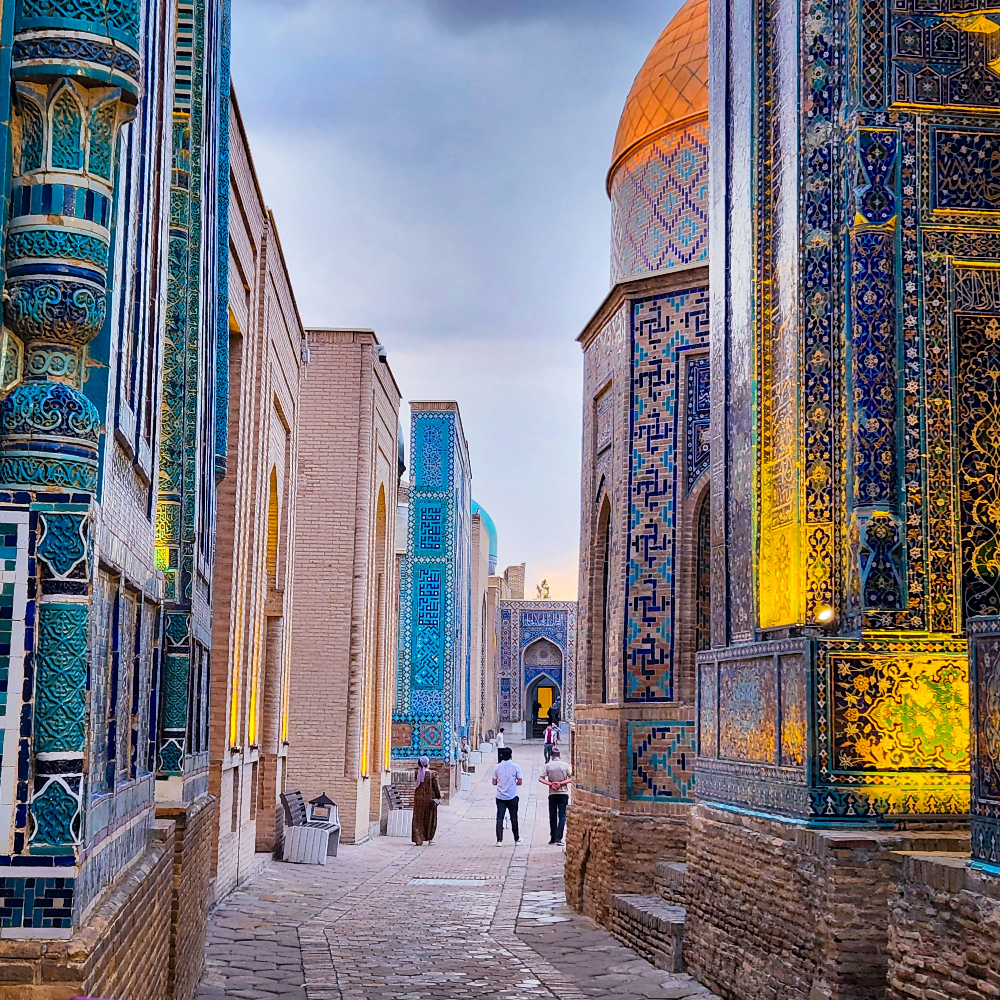
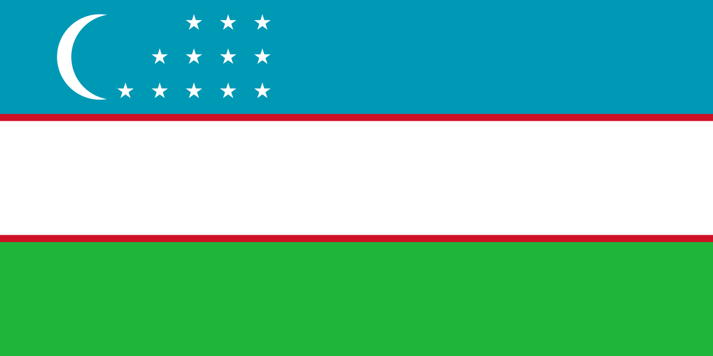
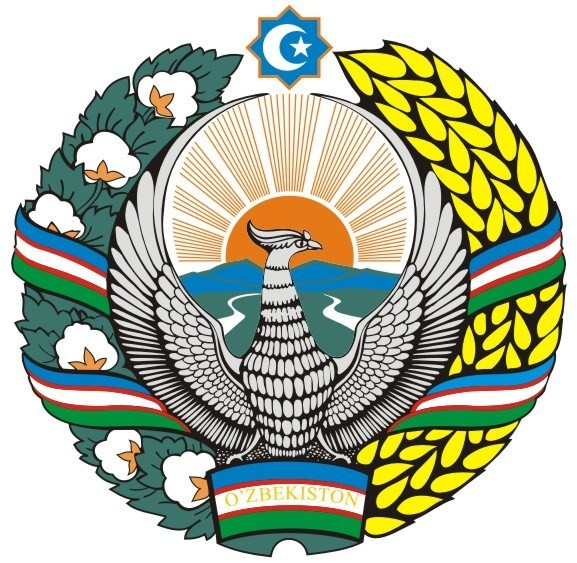

Uzbekistan is a landlocked nation located in the heart of Central Asia. Known historically as a central stop on the Silk Road, it is rich in Islamic architecture, ancient cities, and cultural traditions. Key FactsCapital: TashkentPopulation: ~37.7 million (most populous country in Central Asia)Official Language: Uzbek (Turkic language family); Russian is also widely spokenCurrency: Uzbekistani Soʻm (UZS)Government: Unitary presidential republicGeography: Doubly landlocked (bordered by Kazakhstan, Kyrgyzstan, Tajikistan, Afghanistan, and Turkmenistan). Features expansive desert landscapes like the Kyzylkum, as well as fertile valleys like the Fergana Valley.History & CultureAncient Cities: Uzbekistan is famous for historical UNESCO World Heritage cities like Samarkand, Bukhara, and Khiva, which served as hubs for trade, science, and Islamic scholarship.Timurid Empire: In the 14th century, the region was the center of Timur's (Tamerlane's) empire, with Samarkand serving as its capital.Soviet Era & Independence: After being annexed by the Russian Empire and later becoming the Uzbek Soviet Socialist Republic, Uzbekistan declared independence on September 1, 1991.Cuisine: Renowned for dishes like Palov (rice pilaf with meat and vegetables), Somsa, and traditional flatbreads (Non).If you are looking for specific details—such as travel recommendations, economic insights, or visa requirements—feel free to ask!


The national flag of Uzbekistan was officially adopted on November 18, 1991, shortly after the country declared independence from the Soviet Union. Design & Elements Blue Stripe (Top): Symbolizes the sky, clear water, and eternal life. Historically, blue was also the color of the banner of Amir Timur (Tamerlane), a key historical figure who ruled the region in the 14th century. White Stripe (Middle): Represents peace, good luck, and moral purity. Green Stripe (Bottom): Stands for nature, fertility, and new life, while also honoring the region's predominant religion, Islam. Thin Red Stripes: Symbolize the vital life energy present in all living beings, bridging the sky and earth. Crescent Moon: Represents the birth of Uzbekistan as a newly independent nation and connects to its Islamic cultural heritage. 12 White Stars: Arranged in three rows (3, 4, 5) beside the crescent. They represent: The 12 months of the year and the 12 constellations of the zodiac, honoring Central Asia’s historic contributions to astronomy (such as Ulugh Beg's observatory in Samarkand). Perfection, statecraft, and ancient cultural traditions.
The State Emblem of Uzbekistan was officially adopted on July 2, 1992. It incorporates traditional symbols representing the country's national identity, natural wealth, and history. Design & Elements The Khumo (Huma Bird): A mythical bird with outstretched wings located at the center, symbolizing freedom, happiness, love, and nobility. Rising Sun: Positioned behind the Khumo bird, shining rays over a landscape of mountains, rivers, and valleys, symbolizing light, life, and the future of the nation. Wreath of Wheat & Cotton: Surrounding the central emblem are ears of wheat on the left and cotton bolls on the right—Uzbekistan's two major agricultural products—intertwined with a ribbon in the colors of the national flag. The Eight-Pointed Star (Rub el Hizb): Located at the top of the emblem, symbolizing the unity and independence of the republic. Inside the star are a crescent moon and a star, mirroring the national flag. Scroll Banner: A ribbon at the bottom featuring the national flag's colors bears the word "Oʻzbekiston" in the Uzbek Cyrillic script (Ўзбекистон).